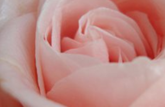
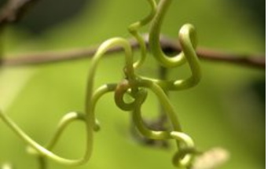

相关文章

快速生长的葡萄藤闻起来很好

快速生长的格子植物
快速生长的常绿藤蔓

不同类型的葡萄藤
主页>>园艺空间
作者：Teo Spengler; 2019年3月18日更新
葡萄藤是解决这么多花园挑战的简单方法。如何增加种植高度？如何在栅栏和墙上添加纹理或屏蔽不需要的视图？如何引入一点戏剧？观赏藤蔓做到了这一切。
放好后，攀爬植物为您的后院增添了惊喜，为您的花园增添了美丽。诀窍是成为一个优秀的媒人，并为您想要的位置选择合适的葡萄藤。考虑一下这些壮观的藤蔓植物，令人惊叹的展示，让您的家人感到高兴，并让邻居们对荆芥有所了解。
无论你住在这个国家的哪个地方，小号藤（Campsis radicans）很可能会在你的院子里茁壮成长。这种耐寒的原生葡萄树是一种幸存者，生长在4到10区，这意味着在东北和中西部的冰冷冬季以及南方的夏季蒸汽中幸存。
这些花看起来像小喇叭，呈现鲜红色，橙色或黄色，与深绿色的叶子形成鲜明对比。形状开花的花朵吸引了悍马，蝴蝶和蜜蜂。
树叶非常密集，藤蔓很大，非常适合私密墙壁。它垂直生长，快速覆盖链条围栏和坚固的木制或金属围栏。
最好在大型播种机中种植小号藤。这可以防止跑步者在后院蔓延。把它放在阳光下，看着它。不要将植物种植在建筑物上，因为藤蔓爬上可能导致结构损坏的气囊根部。
紫色的风信子豆藤（Dolichos lablab purpureus）可以快速填充大型围栏或墙壁，并且开始时花费很少。这是一年一度的，所以你可以从种子中自己种植它。幼苗迅速脱落，生长迅速，开花迅速。
这种葡萄树是一种豆类，如豌豆和豆类，它通过缠绕而攀爬。整个植物很可爱，从深红色的茎到闪亮的绿叶。微妙，丁香，玫瑰花朵保持未来所有的夏季长，并有迷人的豌豆花的样子。
对于在花朵下形成的3英寸长的红宝石紫色豆荚，你会同样激动不已。葡萄藤快速生长到10英尺高，没有太多的帮助，它可以兼作固氮剂，在花园中非常宝贵。
快速生长的葡萄藤闻起来很好
快速生长的格子植物
快速生长的常绿藤蔓
不同类型的葡萄藤